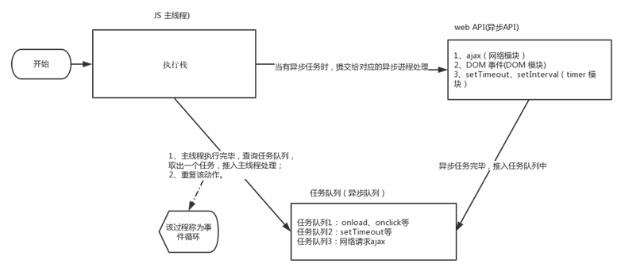
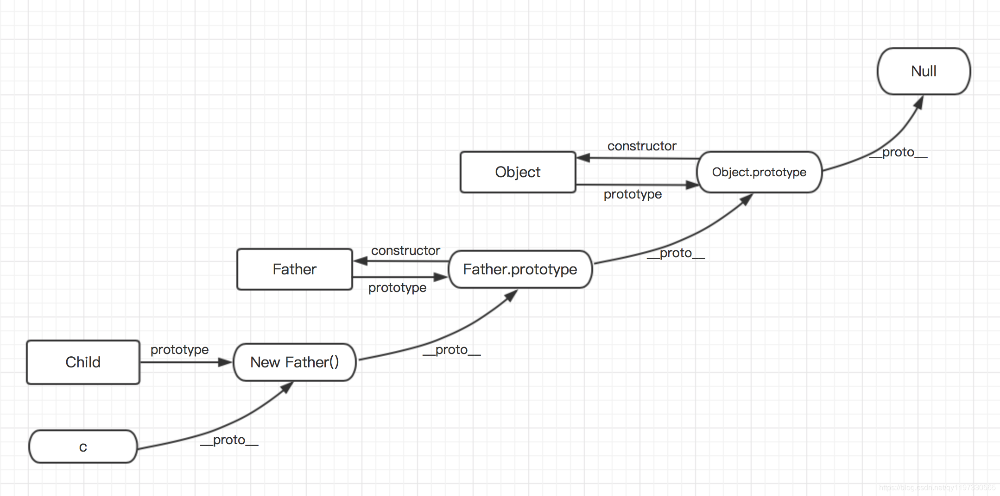
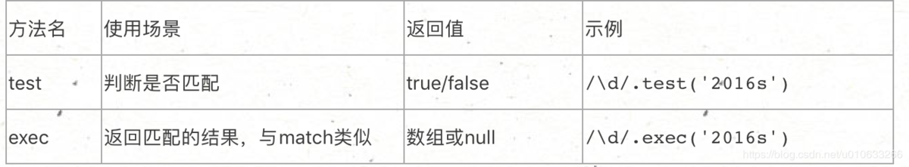
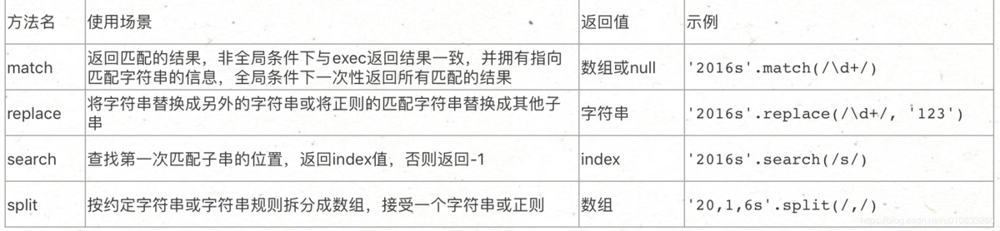

1.JS 是单线程 也就是说 同一时间 只能做一件事 JavaScript 就是为了处理页面中用户的交互，以及操作 DOM 而诞生，比如某个 DOM 元素进行添加和删除，不能同时进行，应该先添加，后删除 2.单线程就意味着，所有任务需要排队，前一个任务结束 ，才能执行后一个任务。 这样导致的问题是：如果 JS执行的时间过长，这样就会造成页面渲染不连贯，导致页面渲染加载阻塞的问题 3.同步 和 异步 为解决 单线程 问题，利用多核 CPU 的计算能力，HTML5 提出Web Worker ，允许 JavaScript 脚本创建多个线程。于是，JS中出现了同步和异步。 同步：前一个任务结束后再执行后一个任务，程序的执行顺序与任务的排列顺序是一致的、同步的。 异步：做前一个任务时间比较长，那么在做前一个任务的同时，还可以去处理后面其他的任务。 他们的本质区别：这条流水线上各个流程的执行顺序不同。 4.同步任务和异步任务的执行过程 同步任务：都在主线程上执行，形成一个执行线。 异步任务：JS 的异步是通过回调函数实现的 异步任务有三种类型： 1.普通事件， click、resize 等 2.资源加载， load、error 等 3.定时器，setInterval、setTimeout 等 注意：异步任务相关 回调函数 添加到 任务对列 中（任务队列也称为 消息队列 ） 
1.先执行 主线程 ，当有异步任务时，提交给 对应的 异步进程处理（处理后）进入异步对列，（如果不处理，则不会进入异步队列） 2.等全部 主线程 的 任务执行完毕后，查询 异步队列 是否有任务，有则推入主线程处理（重复执行） 3.由于 主线程 不断的重复获得任务，执行任务，再获取任务，再执行，所以这种机制被称为 事件循环（eventloop）
先执行 同步任务，再执行 异步任务
原型链
由于前面的文章中已经详细写过关于原型的文章，那么先来回顾一下原型、构造函数和实例对象的关系，请谨记下面的规则，这是理解原型链的基础：
每一个构造函数都有一个属性叫prototype，这个属性是一个指针，它指向了一个对象，这个对象就是原型；
每一个原型对象默认会获取一个constructor属性，这个属性又指回了构造函数；
每一个实例对象都有一个内部属性[[prototype]]，这个属性指向创建它的构造函数的prototype属性值，也就是原型对象；
当试图获得一个对象的某个属性时，若这个对象本身没有这个属性，那么就要去它的[[prototype]]（即它的构造函数的prototype）中寻找。
由于很多浏览器中通过__proto__能够访问到对象内部的[[prototype]]属性，所以接下来讨论中我们都会使用__proto__代替[[prototype]]。
function Father () {
this.fatherName = 'dad'
}
Father.prototype.say = function () {
console.log(this.fatherName)
}
function Child () {
this.childName = 'son'
}
Child.prototype = new Father()
Child.prototype.sing = function () {
console.log('hello dad')
}
var c = new Child()
c.say() // dad
将子类型Child构造函数的原型重写为父类型的实例，
这样，当在子类型的实例c上访问一个属性时，会先在实例c本上寻找，
如果没有找到，则回去c的原型对象，也就是Child.prototype上去找，
而这时Child.prototype指向的是Father的实例，由此实现了子类型访问
父类型实例的属性和方法（包括父实例对象和原型对象上的所有属性和方法），也就实现了继承。

JavaScript 数据类型 在 JavaScript 中有 6 种不同的数据类型： string number boolean object function symbol 3 种对象类型： Object Date Array 2 个不包含任何值的数据类型： null undefined
typeof 操作符 可以使用 typeof 操作符来查看 JavaScript 变量的数据类型。 constructor 属性 constructor 属性返回所有 JavaScript 变量的构造函数。 以使用 constructor 属性来查看对象是否为数组 (包含字符串 "Array"):
将数字转换为字符串 全局方法 String() 可以将数字转换为字符串。 该方法可用于任何类型的数字，字母，变量，表达式；&布尔值，Date Number 方法 ；Boolean 方法；Date 方法： toString() 也是有同样的效果。 将字符串转换为数字 全局方法 Number() 可以将字符串 ； 布尔值 ；日期转换为数字。 日期方法 getTime() 也有相同的效果。 自动转换类型 当 JavaScript 尝试操作一个 "错误" 的数据类型时，会自动转换为 "正确" 的数据类型。 以下输出结果不是你所期望的： 5 + null // 返回 5 null 转换为 0 "5" + null // 返回"5null" null 转换为 "null" "5" + 1 // 返回 "51" 1 转换为 "1" "5" - 1 // 返回 4 "5" 转换为 5 当你尝试输出一个对象或一个变量时 JavaScript 会自动调用变量的 toString() 方法：
一、什么是作用域 存储和访问变量，是任何一种编程语言最基本的功能之一，变量存在哪里？程序需要时如何找到它？ 这些问题需要一套良好的规则来规范，这套规则，就成为作用域。 函数作用域： 使用规范 作用域链只向上查找，找到全局window即终止，应该尽量不要在全局作用域中添加变量。 函数每次被调用 会创建一个新的作用域 用完后其环境变量将会被删除 如果子函数被使用时父级环境将被保留
直接量语法 /pattern/modifiers; 实例 var patt = /w3school/i; 创建 RegExp 对象的语法： new RegExp(pattern, attributes); 修饰符 说明 i 忽略大小写匹配 g 全局匹配，即是匹配一个后继续匹配，直到结束 m 多行匹配，即是遇到换行后不停止匹配，直到结束 方括号 [abc] 查找方括号之间的任何字符。 [^abc] 查找任何不在方括号之间的字符。 [0-9] 查找任何从 0 至 9 的数字。 [a-z] 查找任何从小写 a 到小写 z 的字符。 [A-Z] 查找任何从大写 A 到大写 Z 的字符。 [A-z] 查找任何从大写 A 到小写 z 的字符。 (red|blue|green) 查找任何指定的选项。 元字符 . 查找单个字符，除了换行和行结束符。 { \w 查找单词字符。 (这几个换成大写字母都是 非) \W 查找非单词字符。 \d 查找数字。 \s 查找空白字符。 \b 匹配单词边界。} \xxx 查找以八进制数 xxx 规定的字符。 \xdd 查找以十六进制数 dd 规定的字符。 \uxxxx 查找以十六进制数 xxxx 规定的 Unicode 字符。 量词 n+ 匹配任何包含至少一个 n 的字符串。 n* == n{0,} 匹配任何包含零个或多个 n 的字符串。 n? 匹配任何包含零个或一个 n 的字符串。 n{X} 匹配包含 X 个 n 的序列的字符串。 n{X,Y} 匹配包含 X 至 Y 个 n 的序列的字符串。 n$ 匹配任何结尾为 n 的字符串。 ^n 匹配任何开头为 n 的字符串。 a|b 匹配包含a或b的字符串 RegExp对象相关方法  String对象相关方法 
replace 具体用法 直接传入字符串进行替换，找到子串后只替换一次,如果希望全部替换，可以使用正则表达式并用全局修饰符 g 方式 'abcdefgggg'.replace(/g/g,'_') // 将g替换成_ 高级用法 第二个参数可以使用 function，其中有三个参数，分别为 匹配的字符串、当前匹配的字符串index值、匹配的源字符串